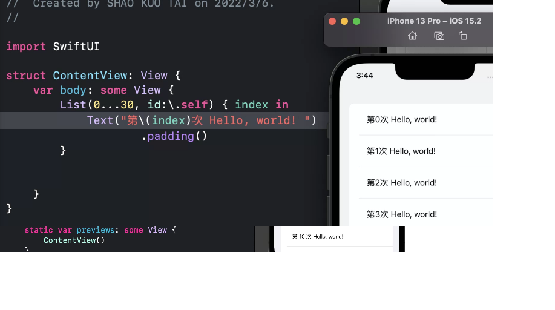

TableView 和 TableViewController 使用上的區別

1. 準備好UITableviewcontroller，設定起始頁面
- 新增single view專案
- 拉進一個Navigation Controller (=導覽頁面Navigation+UITableviewcontroller)
- 目前箭頭是指向原來的viewcontroller，把箭頭拖曳過去到Navigation Controller
- 再刪除原先的viewController 和swift程式
這邊是可以直接拉進來UITableviewcontroller就可以了
不過 因為課程要做一個餐廳推薦APP，之後會用到Navigation，所以使用Navigation Controller
一個APP一開啟，第一個顯示的view，在製作時會有一個箭頭指向他。
讓Navigation Controller變成起始頁面。
點選預設的view 按delete鍵刪除 同時刪除ViewController.swift
2. 新增一個cocoa touch class，然後和UITableviewcontroller產生關聯
- 建立一個程式檔 作為剛剛拉進來的UITableviewcontroller的控制程式，取名為newTableViewController.swift
- 讓newTableViewController.swift和UITableviewcontroller產生關連，如下圖。這 樣UITableviewcontroller這個元件的所有程式碼就寫在newTableViewController.swift
要注意父類別是誰

3. 為自訂cell建立類別並且和自訂cell產生關聯
cell的style使用basic的話，預設類別是UITableViewCell這個別，所以會有預設的textLabel和ImageView的變數可以使用。
如果要使用更多的元件，就必須在類別增加IBOutlet變數屬性，如果新增加了屬性，類別就變成新類別了
所以作法就是建立一個新的類別，繼承UITableViewCell，本質上他就是UITableViewCell，
但是cell的style使用custom的時候，可以任意加元件上去，並且幫這些元件加IBOutlet到這個新的子類別
這個子類別本質上還是UITableViewCell，只是多加了幾個成員變數， 這幾個成員變數就是我們自訂的元件。
首先為自訂cell建立新類別， 這樣view才能和程式產生關連，記得一定要繼承UITableViewCell，建立好的cell類別，名字在這邊我用CustomTableViewCell

4. 設定cell
TableviewController預設有一個protottype，所以不用加，只要設定cell為Custom，identifier為ccell, 然後拉好3個標籤和一個imageView

5. 在CustomTableViewCell類別建立自訂元件的變數
在CustomTableViewCell類別建立自訂元件的變數
在CustomTableViewCell.swift中加入四個屬性 一個imageview和三個label 使用下面方法加入

重複建立其他三個Location name type
- @IBOutlet weak var nameLabel: UILabel!
- @IBOutlet weak var locationLabel: UILabel!
- @IBOutlet weak var typeLabel: UILabel!
- @IBOutlet weak var thumbnailImageView: UIImageView!
其中
@IBAction指示動作的方法
@IBOutlet作為輸出的一個屬性
6. 手機自雲端下載資料顯示的開發方式
每一家餐廳當作一個物件包含，餐廳名稱、餐廳影像檔名、餐廳地點、餐廳形態
把餐廳當作類別
自伺服器取得之資料會是一個陣列，裡面包括所需要的餐廳物件，
[ {餐廳1}, {餐廳2}, {餐廳2}, {餐廳3}, {餐廳4}, {餐廳5},....]
下面圖片顯示整個手機顯示資料的過程，手機會自伺服器取得上面所述的物件陣列，再一個一個以索引值取得餐廳資料放到cell來顯示。
以4個字串陣列 來裝載 餐廳名稱、餐廳影像檔名、餐廳地點、餐廳形態
上一個使用物件是比較妥善的做法，這樣你增加餐廳屬性等等的修該之後，你的程式不用改太多，因為你就是在傳送和接收一個餐廳的物件陣列，
但是因為要讓大家學習方便所以我們拆成4個字串陣列
如下圖所示
當然你應該可以看出來，如果妳要再增加一個屬性，例如餐廳的好評程度，那整個程式都要改。
以4個字串陣列當作中介切開系統開發
另外在開發時，應該以資料將整個系統分割成傳輸和顯示兩個部分，以資料串接。
例如，下面這些陣列，如果在資料下載之後就是這個格式，那我們就可以先以這些陣列來寫本地端顯示的程式。
等後面幾章我們寫好遠端抓資料的程式，下載後和這幾個陣列格式一樣，那就直接適用，
6. 提供資料來源Datasource
先準備一下那4個陣列
所以我們先把這幾個陣列設為成員變數備用。
那麼看看大家腦袋清楚嗎？?這幾個陣列設為成員變數?要設定成那一個類別的成員變數? 目前就兩個選項? 1 或 2
- newTableViewController.swift
- CustomTableViewCell.swift
number of section方法
這個專案使用TableView Controller，所有tableview和其容器view的鏈結都不必和前一章那樣設定，什麼幫View controller加協定，指定View controller為TableView的datasour等等都不用做了，
只需要設定cell的元件以及和程式關聯，而類別是UITable View Controller的子類別，
所以datasource的《number of row》和 《cell for row》都加好了，只需要填寫內容。
只是使用UITable View Controller，其datasource會多一個方法 《number of section》
所以我們使用UITableViewController，datasource需要設定三個方法
- 《number of section》，表格可以分成幾個section
- 《number of row》 要顯示幾個row
- 《cell for row》放進去每個cell的資料
number of row方法
要return 表格長度，這邊應該是遠端下載資料的長度，當遠端下載資料後就是把資料放在上面的陣列， 所以我們傳回陣列長度就可以了，swift的陣列長度不是length而是count
cell for row方法
整個流程一樣，使用indexPath.Row取得該編號的cell
- 使用indexPath.Row取得該編號的cell
- 根據indexPath.row指定cell內元件的資料 使用indexPath.row當作剛剛四個陣列的索引值依序填入餐廳資料
- return cell
7. 讓cell的影像由方形變成圓形
接下來修改使thumbnailimage變成圓形，加入
原本影像框的是方形，cornerRadius是正方形四個角的弧的半徑，設為方形邊長的一半就是圓形
clips To Bounds → 影像切到邊界，如果你做出來的imageView不是圓形，是因為你的imageView不是正方形，去調整一下寬和高。
8. Label如何摺行
location是地址 可能會很長 無法在一行內顯示
可以作如下調整 讓她換行

9. 習題
類似前一章的題目，但是資料加多，影像就用前一章的，但是要用UITableViewController來做，
1 不要厭煩從空專案開始做，要能夠完全不看講義做完
2 在做的時候，不要只是背步驟，整個過程都是有一個邏輯在，要一面做一面和同一組的同學解釋。